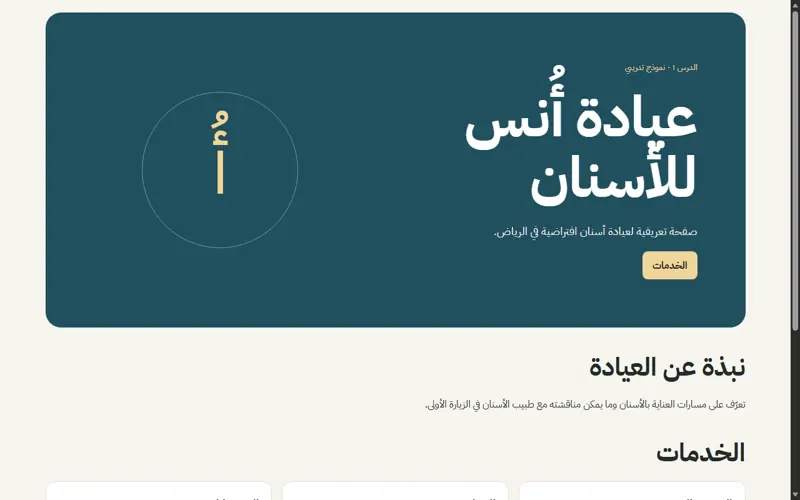
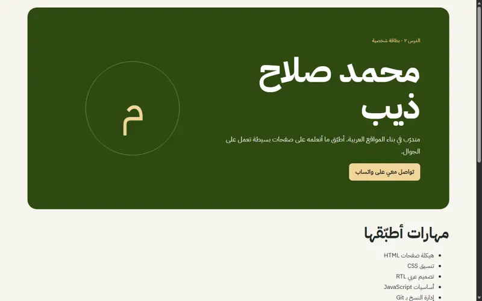
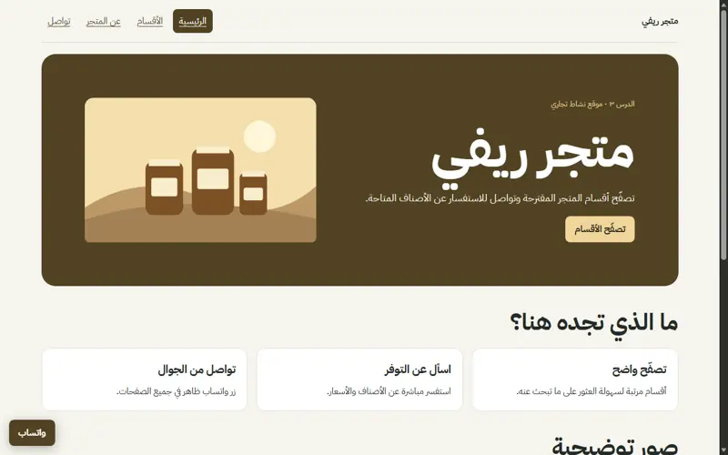
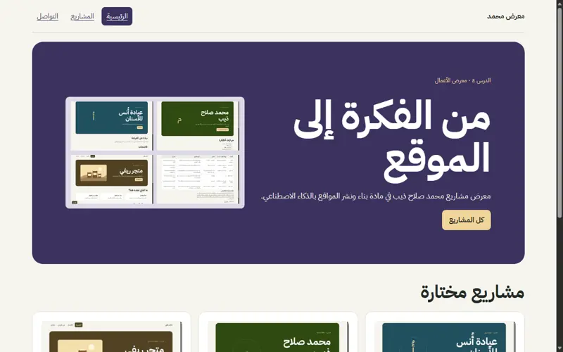

مواقعي في مادة بناء ونشر المواقع
محمد صلاح ذيب
1 / 8من أنا؟
متدرّب أطبّق أساسيات بناء المواقع العربية.
تعلّمت كيف أحوّل المواصفات إلى صفحات مترابطة وأراجعها قبل النشر.
2 / 8عيادة أُنس للأسنان
كيف يتعرّف الزائر على الخدمات بسرعة؟ جمعت التعريف والخدمات والتواصل في صفحة عربية واحدة.
زيارة الموقع
بطاقتي الرقمية
كيف أشارك معلوماتي برابط واحد؟ فصلت الهيكل والتنسيق والسلوك ووضعت التواصل في قسم واضح.
زيارة الموقع
متجر ريفي
كيف يتصفح الزائر أقسام المتجر؟ بنيت أربع صفحات مترابطة بزر تواصل ثابت.
زيارة الموقع
معرض الأعمال
كيف أجمع روابط أعمالي؟ بنيت معرضًا بثلاث صفحات ووثّقت كل مشروع بصورة ووصف ورابط.
زيارة الموقع
ما تعلّمته
- أبدأ بوصف الجمهور والأقسام قبل كتابة الصفحة.
- أختبر الاتجاه العربي والتنقل على عرض الجوال.
- جرّبت مسح CSS في نسخة Git ثم استرجعته، وتحققت من عودة الملف الأصلي.
شكرًا
محمد صلاح ذيب
معرض الأعمال بداية العرض8 / 8